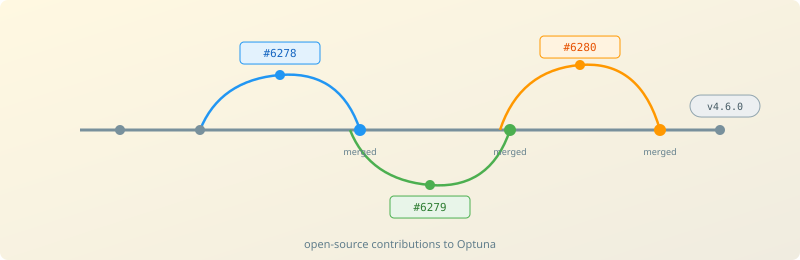

Contributed to Optuna v4.6.0 — a widely used open-source hyperparameter optimisation framework — by modernising type-checking and import patterns across core modules.
Modernised type-checking and import patterns across core Optuna modules, reducing unnecessary runtime dependencies and improving static analysis hygiene.
Optuna is one of the most popular hyperparameter optimisation libraries in the Python ecosystem, used across industry and research for automated tuning. These contributions refactored typing-only imports under TYPE_CHECKING to reduce runtime overhead and improve tooling support. Changes were merged and highlighted in the official v4.6.0 release notes.
optuna.importanceFanovaImportanceEvaluator type-checkingstudy/optimize.pyTYPE_CHECKING to reduce unnecessary runtime dependencies across core modules.